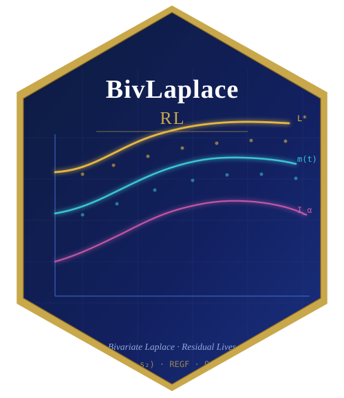
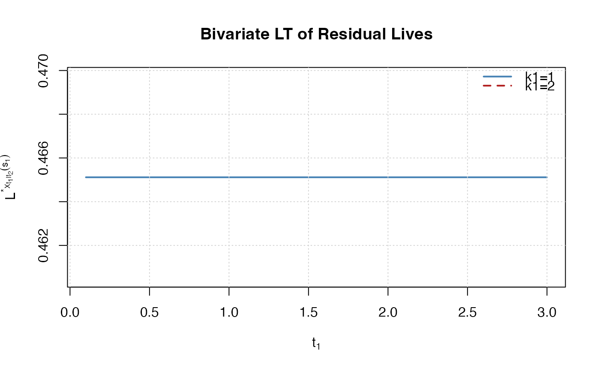

Plot Bivariate Laplace Transform of Residual Lives
Source:R/plotting.R
plot_blt_residual.RdPlots the star Laplace transform of residual lives \(L^*_{X_{t_1|t_2}}(s_1)\) as a function of \(t_1\) for fixed \(s_1\), \(t_2\). Optionally overlays two distributions for visual comparison of the BLt-rl order.
Usage
plot_blt_residual(
surv_fn,
surv_fn2 = NULL,
s1 = 1,
t2 = 0.5,
t1_grid = seq(0.1, 3, by = 0.1),
k1 = 1,
k2 = 1,
theta = 0,
xlab = expression(t[1]),
ylab = expression(L^"*"[X[t[1] * "|" * t[2]]](s[1])),
main = "Bivariate LT of Residual Lives",
col1 = "steelblue",
col2 = "firebrick",
lwd = 2,
legend_labels = c("Distribution 1", "Distribution 2")
)Arguments
- surv_fn
Joint survival function. If a second distribution is to be overlaid, pass it as
surv_fn2.- surv_fn2
Optional second survival function for comparison.
- s1
Laplace parameter (default 1).
- t2
Fixed second truncation age (default 0.5).
- t1_grid
Grid of first truncation ages.
- k1, k2, theta
Parameters for the default Gumbel distribution; used only when
surv_fn = NULL.- xlab, ylab, main
Plot labels.
- col1, col2
Line colours.
- lwd
Line width.
- legend_labels
Length-2 character vector for legend (ignored if
surv_fn2 = NULL).
Examples
sX <- function(x1, x2) sgumbel_biv(x1, x2, k1 = 1, k2 = 1, theta = 0.3)
sY <- function(x1, x2) sgumbel_biv(x1, x2, k1 = 2, k2 = 1, theta = 0.3)
plot_blt_residual(sX, sY, s1 = 1, t2 = 0.5,
legend_labels = c("k1=1", "k1=2"))
